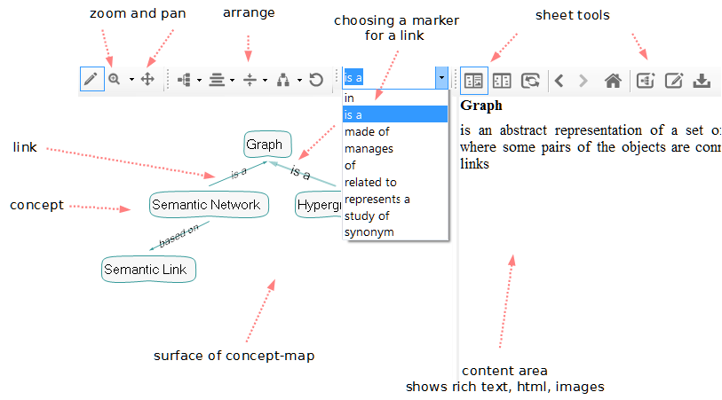
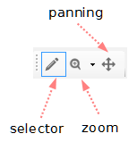
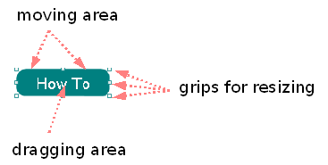
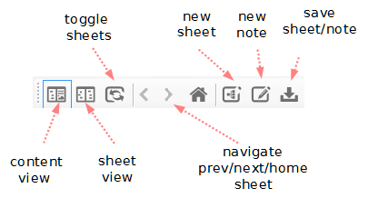
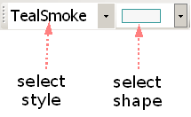
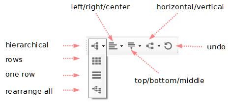

With limada::concept you can draw, edit and store concept maps. A concept map is a diagram showing the relationships among concepts. They are graphical tools for organizing and representing knowledge. They include concepts, usually enclosed in circles or boxes of some type, and relationships between concepts indicated by a connecting line linking two concepts.
Concepts can be connected with labeled arrows. The relationship between concepts can be articulated in linking phrases, e.g., "gives rise to", "results in", "is required by," or "contributes to".
Concept maps are similar to mind maps, but give more freedom, as mind maps are often restricted to radial hierarchies and tree structures.
Adding a Concept

Click somewhere on the surface, and press the enter key. You will get a field where you can enter your text.
Finish with F2 or clicking on the surface.
Or
Choose the AddWidget-Button in the toolbar. Draw new concepts. Finish adding by choosing the Select-Button in the toolbar.
Or
Select a existing concept and press enter. A new concept with a link to the selected concept is created.
Or
Drag some text from another application. Note: if you drag a long text, all of the text is stored in the database. See Chapter DragDrop contents.
Editing a Concept or mark a Link.
Select an existing concept or link with a mouse click. Press F2 to enter editing mode. Change the text. To store the changed text, press F2 again. Cancel editing without changing with ESC.
Linking concepts
Select a concept or link in the dragging area and drag it (by holding the mouse button down) over another concept or link. A new link is created.
You can link a concept with as many other concepts you need. You can link concepts with other links.
Every mark of a link is choosable in the marker-dropdown. You can select a link and choose a mark in the marker-dropdown to mark a link.
If a mark is selected in the marker-dropdown, a new link is created with this marker. Otherwise, the standard-marker ° is used.
Expand/Collapse
You can show or hide the linked concepts of a concept by pressing the space-bar. Alternatively you can use the – or + - keys on the numeric key pad.
Searching for a concept
Choose Edit in the main menu. Click on Search. You will get a search window to write the term you search for. After clicking the ok-button, a new Sheet with the searched concept will be shown.
Deleting a concept or link
Press CtrlDel to completely remove the selected items.
Moving and resizing

Select a concept. Click on the border of the concept, hold the mouse and move the concept. With a click on the grips you can resize the shape of the concept.
Storing contents (html, rtf, images) in your concept map
By dragging html, rtf or images on the surface, a concept with content is created. You see the content in the left area of the application. This content is stored in the database.
Organizing concept maps in Sheets

By default, the screen is splitted in two areas: one with your current concept map, the other to view contents of a concept.
You can change this to have two concept maps side by side by clicking on the sheet view-button in the toolbar.
You have now two views on your concept database. By dragging between the two views, you can create a sheet with all the concepts you want to have in one view.
If you want to hide, press Del to remove a concept out of the sheet (NOT out of the database!).
Save a sheet by clicking on the save sheet button in the tool bar. Please note: Sheets are NOT saved automatically if the are changed! You have to do this by your own,
Sheets are stored like other concepts in the database. You can act with them as any other concept – linking, moving etc.
Assign different shapes to a concept

You can choose a different shape with the shape-dropdown for your concept.
Using different layouts used by the arranger
